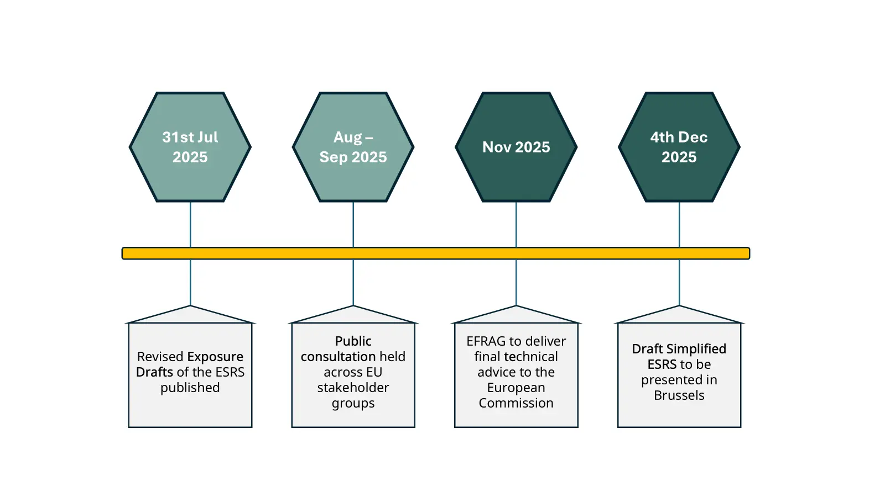

What is CSRD?

The Corporate Sustainability Reporting Directive (CSRD) is reshaping how companies communicate their impact on the world. Introduced by the EU to replace the NFRD, the CSRD brings sustainability reporting to the forefront of corporate accountability.
Effective since January 2023, it requires large, listed companies to disclose detailed environmental, social, and governance (ESG) data starting with the 2024 financial year. The goal is to equip investors, consumers, and stakeholders with clear, reliable information and to push businesses toward long-term, sustainable value creation.
Whether you're preparing to comply or looking to lead in ESG, the CSRD sets a new standard for transparency.
EU Introduces Omnibus Directive to Ease CSRD Burden
In 2025, the EU responded to mounting implementation challenges and business concerns by introducing a reform package known as the Omnibus Directive. This initiative came in response to growing feedback from Member States, industry leaders, and SMEs highlighting the complexity, cost, and resource burden of complying with the Corporate Sustainability Reporting Directive (CSRD).
From CSRD Rollout to Omnibus Reform

The Omnibus Directive proposes a phased delay in sustainability reporting obligations for EU companies and instructs the simplification of the European Sustainability Reporting Standards (ESRS) to make compliance more practical. The ESRS framework will be revised to reduce unnecessary disclosures and focus on materiality-driven reporting. The number of required data points will significantly reduce by prioritizing quantitative indicators over narrative reporting.
This initiative reflects a broader shift in EU sustainability policy: one that aims to balance ambitious ESG goals with economic competitiveness, innovation capacity, and regulatory clarity.
| Wave | Entities Affected | Reporting Start Date | Proposed Reporting timelines | Scope |
|---|---|---|---|---|
| Wave 1 | Large, listed companies (>1,000 employees) | 2025 | No change under "stop-the-clock" | Simplified ESRS reporting; Smaller listed companies out of scope; Value chain responses under VSME |
| Wave 2 | Large companies (>1,000 employees) | 2026 | Postponed to 2028 | Simplified ESRS reporting; Smaller companies out of scope; Value chain responses under VSME |
| Wave 3 | Pre-Omnibus listed SMEs & small financial entities | 2027 | Postponed to 2029 | Out of scope under the revised directive; Value chain responses under VSME |
| Wave 4 | Non-EU companies with significant EU activity | 2029 | No change under Omnibus package | No change for ultimate parents with at least one large subsidiary or branch (revenue > EUR 50m, total revenue > EUR 450m); Ultimate parents below proposed threshold out of scope after transposition |
Are you struggling to comply with the large number of requirements for effective CSRD reporting?
Talk to usRevised ESRS: Simpler, Clearer, More Practical
To implement the simplification goals set out under the Omnibus Directive, EFRAG released the revised and simplified Exposure Drafts of the European Sustainability Reporting Standards (ESRS) on 31st July 2025.
Key Simplifications:
57% reduction in mandatory datapoints and 68% reduction overall
Streamlined double materiality assessment
Clearer structure and language
Removal of all voluntary disclosures
New relief mechanisms for disproportionate cost or effort
Key Dates (Simplified ESRS)
Timeline for the revised reporting standards

Key Strategies for Navigating CSRD Post-Omnibus
Stay Ahead of Regulation
Monitor CSRD and ESRS updates proactively to ensure timely compliance.
Focus on Double Materiality
Strengthen double materiality assessments to assess sustainability impacts and risks effectively.
Leverage Phased Implementation
Use the transition period to refine reporting, engage value chain partners, and build governance.
Automate with ecoPRISM
Streamline ESG data collection and reporting using ecoPRISM’s CSRD platform.
“CSRD reporting is essential for enhancing transparency and accountability in companies' ESG performance. However, challenges like standardization, data reliability, and stakeholder engagement persist. At ecoPRISM, we are dedicated to help you navigate these challenges while driving tangible impact.”

Vishakha Goel
Sustainability Head


ecoPRISM is your trusted partner in CSRD Compliance
A comprehensive solution that accelerates your compliance, saves time and effort while helping you make real progress and stay ahead of the curve.
Take a peek into our intelligent platform
Request a Discovery CallImportant Resources
Explore our resources curated to help you understand and navigate the challenges of CSRD adoption.


Frequently Asked Questions
If you don't see an answer to your question, you can send us an email from our contact form.
Ask usAs per EFRAG confirmation, the ESRS are aligned as closely as possible with the GRI Standards. This reassures established GRI reporters that they are well-equipped for the ESRS and can utilize their current reporting methods effectively
The disclosure requirements under the CSRD will apply to an estimated 50,000 companies, from January 2024. All large companies governed by the law of or established in an EU member state, and all European stock exchange-listed companies (except micro-companies), as well as SMEs, are within the scope. Companies not in the EU but have securities on EU-regulated markets are also in scope.
From January 2028, the CSRD will also apply to non-EU undertakings that generate a net turnover of over €150,000,000 in the EU and have an EU branch office with a net turnover of at least €40 million in the EU, or a large or listed EU subsidiary. However, these companies will only have to supply impact-related information, for which a special standard will be developed.
The CSRD is significantly more comprehensive in scope than the NFRD. Companies have to report in detail the material sustainability impacts associated with its entire value chain. Companies also must disclose on their policies and targets. The ESRS include twelve standards: two cross-cutting standards, covering General Requirements and General Disclosures; and ten topical standards, as depicted in the diagram above.
Companies need to disclose their sustainability information in their annual reports – as a part of the management section. This means that one report will give an overview of both the financial and sustainability information for the company.
The data needs to also be reported in a standardized digital format, to ensure comparability and alignment in the European single access point database.
The reports are required to be assured as per limited assurance requirements.
Filers must conduct a “double materiality” assessment, considering both their impact on society and the environment and how external sustainability factors affect their organization. Double materiality is the union (in mathematical terms, i.e. union of two sets, not intersection) of impact materiality and financial materiality. A sustainability topic or information meets therefore the criteria of double materiality if it is material from the impact perspective or from the financial perspective or from both perspectives.
This assessment involves stakeholders evaluating risks and opportunities across CSRD topics, using qualitative and quantitative measures. The outcomes determine which CSRD components companies must report, ensuring alignment with issues significant to both the organization and society.
The Corporate Sustainability Reporting Directive (CSRD) came into force on 5 January 2023, replacing the NFRD to strengthen sustainability reporting across the EU. Companies began reporting under the CSRD framework starting in 2024. However, in early 2025, the European Commission introduced the Omnibus Simplification Package to ease compliance burdens. It proposes raising the reporting threshold to 1,000 employees, delaying reporting deadlines by two years, and simplifying the European Sustainability Reporting Standards (ESRS). These revisions aim to reduce complexity and administrative costs for companies. The proposed changes are currently under legislative review and are expected to significantly reduce the number of companies required to report.